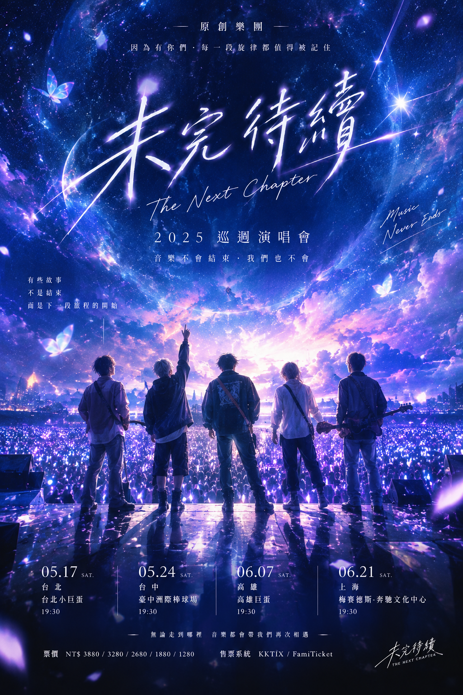
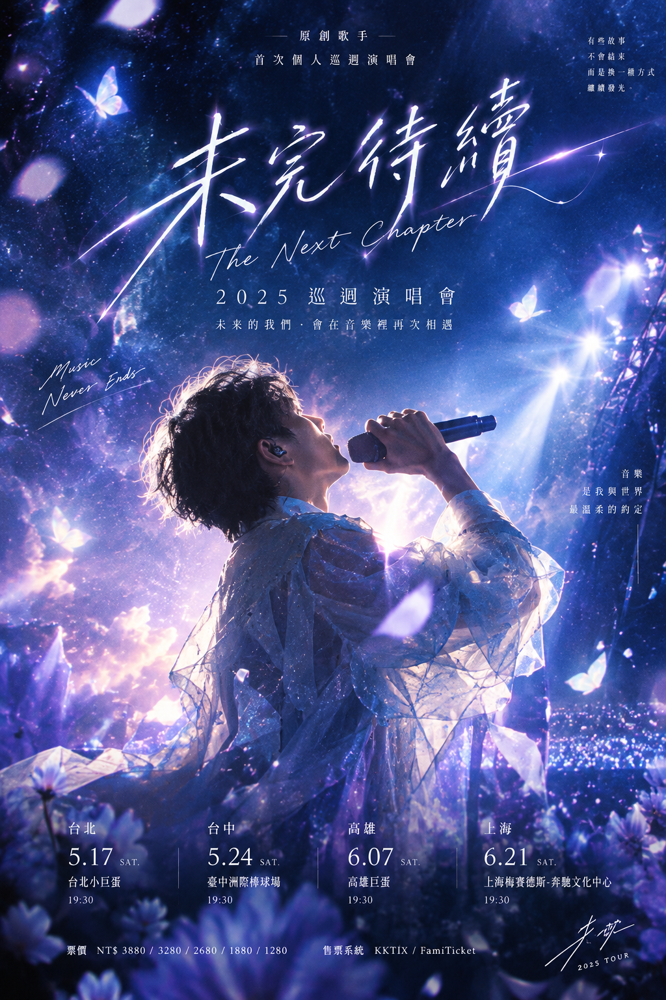
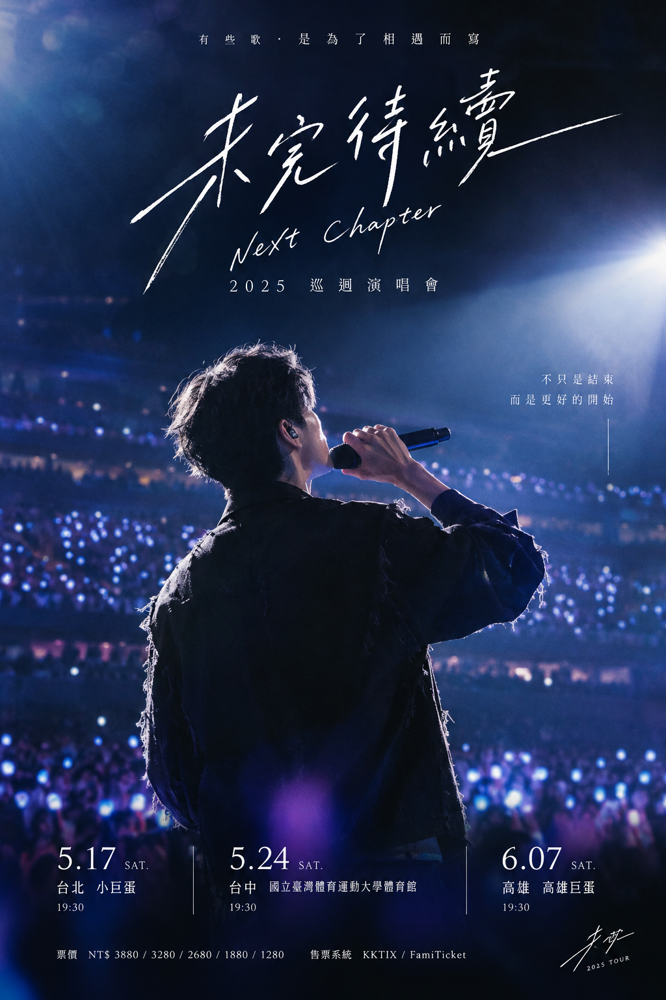

林以安
主唱・詞曲
把藏在心裡的話，唱成一束光。
A STORY STILL IN MOTION

我們把沒說完的話，留給音樂。
從一間小小的排練室開始，四個不同方向的聲音，慢慢寫成同一首歌。那些跌跌撞撞、彼此照亮的日子，成了「未完待續」的名字。
因為相信告別不是句點，這一次，我們帶著新的旋律出發。希望在某一個夜晚，能和你一起把故事唱下去。
Music never ends.FOUR VOICES, ONE STORY
四種個性，四種頻率；相遇之後，就是我們的和弦。
主唱・詞曲
把藏在心裡的話，唱成一束光。
吉他・編曲
讓每段旋律，都有自己的遠方。
貝斯
在安靜的低音裡，穩穩接住你。
鼓・節奏
下一個心跳，就從這裡開始。
2026 · THE NEXT CHAPTER TOUR
四座城市，四個夜晚。
留一個位置，給我們一起唱。

THE NIGHT WE MEET AGAIN
14 NOV 2026
台北流行音樂中心
19:30 週六
21 NOV 2026
台中洲際多功能展演館
19:30 週六
28 NOV 2026
高雄巨蛋
19:30 週六
05 DEC 2026
台南文化中心
19:30 週六
演出與售票資訊將於官方社群公布，期待現場見。

SINGLE · 01A FIRST TASTE OF WHAT'S NEXT
下一個晴天
一段寫給重新出發的前奏。戴上耳機，聽聽下一章的第一道光。
此為瀏覽器即時合成的原創器樂示範，並非正式錄音。